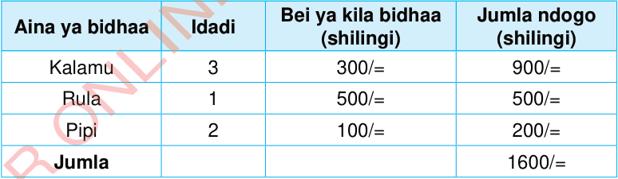

Vibadilika na opereta
Programu nyingi za kompyuta tunazotumia kila siku hufanya hesabu mbalimbali. Mfano, programu za kompyuta zinatumika benki na maduka makubwa kufanya hesabu zinazohusisha fedha na bidhaa. Fikiria umetembelea duka kubwa, ukanunua kalamu 3 kwa shilingi 300/= kila moja, rula moja kwa shilingi 500/= na pipi 2 kwa shilingi 100/= kila moja. Ukilipa kwa noti ya shilingi 2000/=, programu ya duka itahesabu jumla ya fedha unayotakiwa kulipa (yaani shilingi 1600/=) na pesa za kukurudishia kama chenji (yaani shilingi 400/=). Muhtasari wa taarifa za mfano huu zimeoneshwa kwenye Jedwali lifuatalo.

Katika mfano huu, kila bidhaa ina idadi na bei. Ili programu ya kompyuta iweze kufanya hesabu hizi, inahitaji njia ya kuwakilisha vipimo hivyo (idadi na bei). Njia hiyo ni kutumia vibadilika.
Programu ya kompyuta inaweza kuwa na idadi yoyote ya vibadilika. Kila kibadilika kinatambulika kwa jina na kinaweza kuwa na kiasi tofautitofauti pindi programu inapoanzishwa na kuendelea kufanya kazi. Mifano ya vibadilika tunavyoweza kuviunda kutoka katika mfano huu ni IdadiYakalamu (thamani = 3), BeiYaKalamu (thamani = 300) na BeiYaRula (thamani = 500). Inashauriwa unapopendekeza jina la kibadilika,